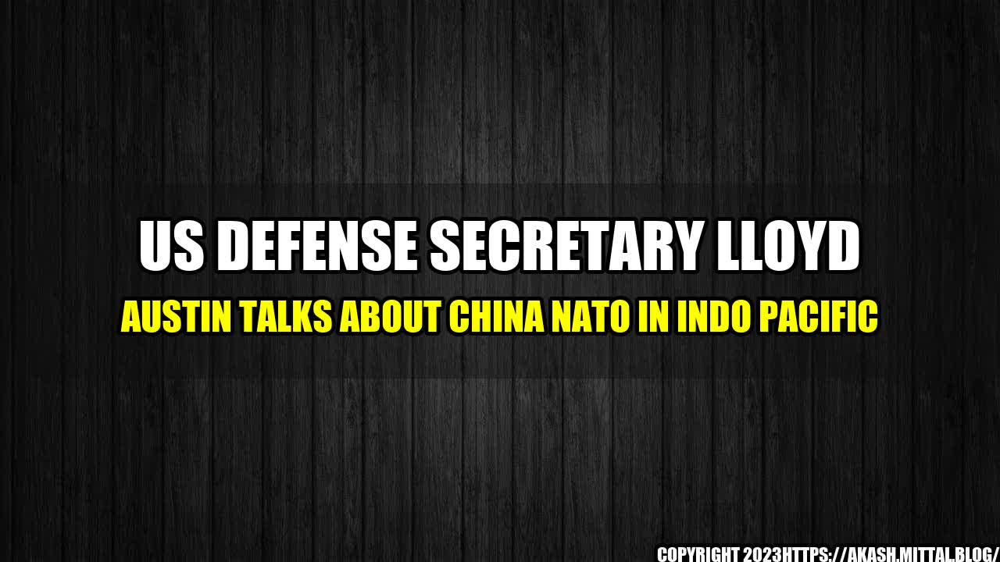

US Defense Secretary Lloyd Austin Talks About China NATO in Indo Pacific

In a recent interview with Foreign Policy, US Defense Secretary Lloyd Austin discussed the growing strategic competition between the United States and China, as well as the importance of NATO's involvement in the Indo-Pacific region.
Austin emphasized that China is the United States' "most significant challenge," both in terms of the country's military capabilities and its growing influence in the region.
"They're expanding their military capabilities and their strategic reach," he said. "They're leveraging their economic power in ways that are intended to undermine our alliances and partnerships and to shape the international environment in their favor."
To meet this challenge, Austin stressed the importance of alliances such as NATO, and the need for the United States to work with partners in the region.
"Our alliances are critical to our strategic advantage," he said. "And in the Indo-Pacific, our partnerships are absolutely essential."
Examples of US-China Strategic Competition
There are many examples of the strategic competition between the United States and China. Here are just a few:
- Taiwan: China considers Taiwan to be a part of its own territory, while the United States has pledged to help defend the island if it is ever attacked. In recent years, China has stepped up its military pressure on Taiwan, with a record number of Chinese military aircraft entering Taiwan's air defense identification zone in 2020.
- The South China Sea: China has claimed almost all of the South China Sea as its own, despite competing claims from other countries in the region. The United States has sailed warships through the disputed waters to challenge China's claims, leading to tensions between the two countries.
- Economic Competition: China has become a major economic power, and its Belt and Road Initiative (BRI) aims to finance infrastructure projects across the world and expand China's global influence. Meanwhile, the United States has been pushing for a "free and open Indo-Pacific" strategy, which aims to counter China's economic and strategic ambitions in the region.
Case Studies in Indo-Pacific Region
NATO's involvement in the Indo-Pacific region has also become increasingly important in recent years. Here are a few case studies:
- India: India is a key player in the Indo-Pacific region, and NATO has been working to strengthen ties with the country. In 2019, NATO signed a partnership agreement with India, and the two sides have been working together on issues such as counterterrorism, cybersecurity, and maritime security.
- Australia: NATO has also been working to build stronger relationships with Australia, which is a key ally of the United States in the region. In 2017, NATO and Australia signed a partnership agreement that aims to enhance cooperation on issues such as cybersecurity, counterterrorism, and maritime security.
- South Korea: South Korea is a crucial partner for the United States in the Indo-Pacific region, and NATO has been working to strengthen ties with the country. In 2019, NATO and South Korea signed a partnership agreement that focuses on cooperation in areas such as cybersecurity, counterterrorism, and disaster relief.
Conclusion
The strategic competition between the United States and China is likely to be one of the defining issues of the 21st century. As US Defense Secretary Lloyd Austin emphasized, alliances such as NATO will play an important role in meeting this challenge, and the United States will need to work closely with partners in the Indo-Pacific region to counter China's military and economic ambitions. By doing so, the United States can help to ensure that the region remains stable and secure, and that the rules-based international order is upheld.
References:
Hashtags:
- #USChinaStrategicCompetition
- #NATOIndoPacific
- #AlliancesForSecurity
Article Category:
Politics & International Relations
Curated by Team Akash.Mittal.Blog
Share on Twitter Share on LinkedIn